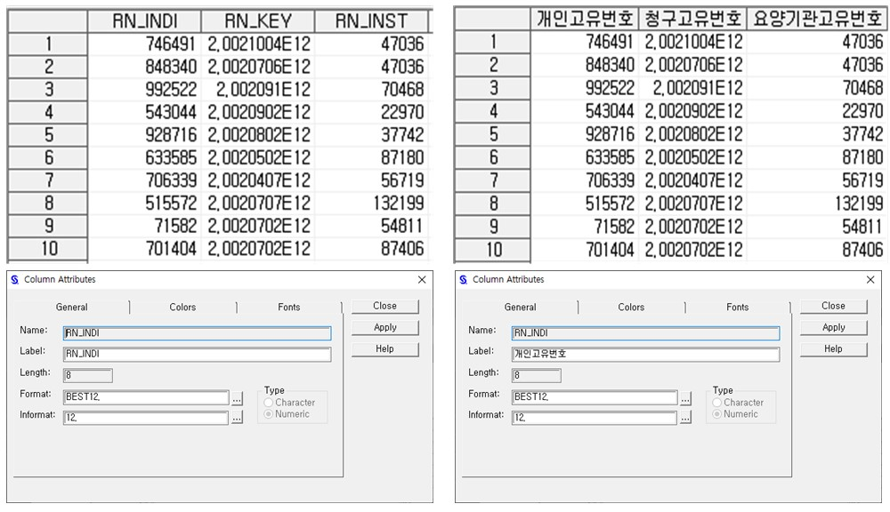
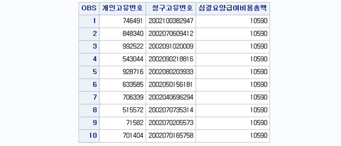
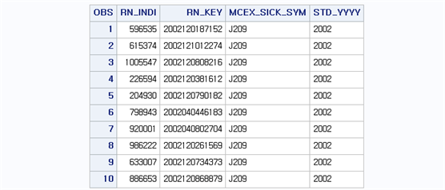
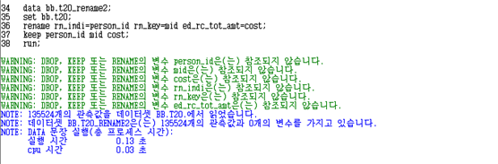
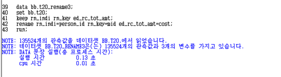
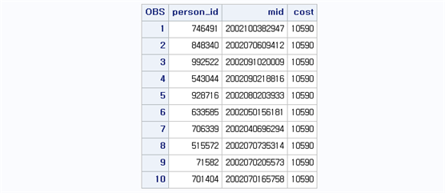
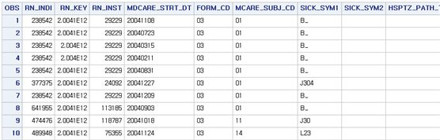
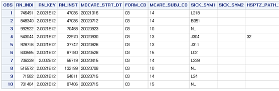
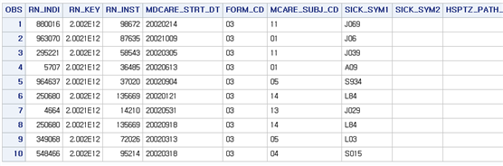
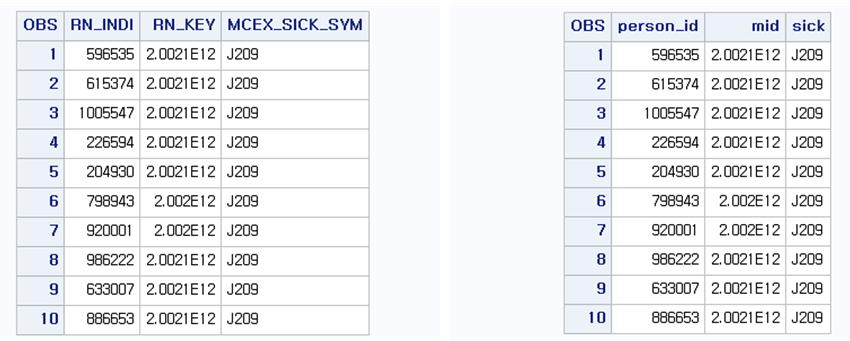

Chapter 3 Set문 활용
3.1 변수에 이름 붙이기
LABEL문은 변수에 대한 설명을 붙이고자 할 때 사용되며 변수명=’내용’으로 사용한다. 이때 LABEL 문의 내용은 공백을 포함하여 최대 40자(한글 20자)까지 가능하므로 변수에 대한 상세한 설명을 붙일 수 있다.
libname bb 'D:\SAS\data';
data bb.t20_label;
set bb.t20;
label RN_INDI='개인고유번호'
RN_KEY='청구고유번호'
RN_INST='요양기관고유번호'
;
run;
SET 문은 기존에 만들어진 데이터셋을 참조 혹은 복사의 용도로 사용된다. 예를 들어 다음과 같은 명령문을 생각해보자.
DATA T20_TEMP; SET BB.T20; RUN;이 명령문은 T20_TEMP라는 데이터셋을 WORK 라이브러리에 생성시키게 된다. 이때 BB라는 라이브러리에 있는 T20 데이터셋을 참조해서 그대로 복사하여 T20_TEMP 데이터셋을 생성시킨다.
위의 LABEL문 예제는 BB 라이브러리에 T20_LABEL 데이터셋을 생성시키는데, 이때 BB 라이브러리의 T20 데이터셋을 참조하여 세 변수 RN_INDI, RN_KEY, RN_INST에만 설명(label)을 붙이고 나머지 변수는 그대로 복사하여 BB 라이브러리에 T20_LABEL 데이터셋을 생성시킨다. 이때 LABEL 문은 변수 이름은 변화시키지 않고 부가 설명만 덧붙이는 역할을 한다. 다시 말해서, LABEL 문은 변수에 대한 설명을 붙이고자 할 때 사용되며 변수명=’내용’으로 사용한다. LABEL 문이 지정된 변수는 PROCEDURE (예를 들어 PROC PRINT) 다음에 변수명 대신 LABEL 문에서 지정된 ‘내용’을 변수명 대신 출력하게 된다.
SET 문을 이용하여 데이터셋을 생성할 때, 자기 자신의 데이터셋으로 덮어씌우는 것도 가능하다. 예를 들어 다음과 같은 명령문을 생각해보자.
data bb.t20;
set bb.t20;
label RN_INDI='개인고유번호'
RN_KEY='청구고유번호'
RN_INST='요양기관고유번호'
;
run;위의 명령문은 BB 라이브러리 T20 데이터셋을 불러와 데이터셋 내에 존재하는 3개의 변수 RN_INDI, RN_KEY, RN_INST에만 설명을 부여하고 나머지 변수는 그대로 복사하여 새로운 데이터셋 BB 라이브러리의 T20 데이터셋을 생성하게 된다. 즉, 원래 데이터셋인 T20에서 LABEL 문만 수행하여 추가한 경우와 같게 된다. 이와 같이 SET 문은 같은 데이터셋에서 추가적인 작업을 하는 것뿐만 아니라 추가적인 작업 여부와 상관없이 기존의 데이터셋을 바탕으로 새로운 데이터셋을 생성시키는 역할을 한다.
3.2 특정 변수를 취하여 새로운 데이터셋 만들기
SET 문을 이용하여 이미 생성된 데이터셋을 토대로 새로운 데이터셋을 생성할 때 특정 변수만 취하여 새로운 데이터셋을 만들고 싶을 때 KEEP 문을 이용한다. KEEP 문은 SET 문과 같이 사용하여 원하는 변수들로 구성된 데이터셋을 생성할 수 있으며, 전체 변수 중에서 취해야 하는 변수의 수가 적을 때 유용하게 사용된다. KEEP 문을 사용하는 방법은 다음과 같다.
DATA 라이브러리.데이터셋명;
SET 라이브러리.기존데이터셋명 (KEEP= 변수명1 변수명2 ...);
RUN;KEEP 문을 SET 문에 붙여서 사용하는 방법 외에 두 구문을 따로 지정하는 방법도 가능하다.
DATA 라이브러리.데이터셋명;
SET 라이브러리.기존데이터셋명;
KEEP 변수명1 변수명2 ...;
RUN;KEEP 문을 SET 문에 붙여서 사용할 때는 “=”을 이용하고 SET 문과 별도로 사용할 때는 “=”이 들어가지 않는다.
BB.T20 데이터셋에서 개인고유번호(RN_INDI), 청구고유번호(RN_KEY), 심결요양급여비용총액(ED_RC_TOT_AMT) 세 개의 변수만 남겨서 BB 라이브러리에 T20_KEEP 데이터셋을 생성시켜보자. 프로그램은 다음과 같다.
data bb.t20_keep;
set bb.t20 (keep= rn_indi rn_key ed_rc_tot_amt);
label RN_INDI='개인고유번호'
RN_KEY='청구고유번호'
ED_RC_TOT_AMT='심결요양급여비용총액';
run;
data bb.t20_keep;
set bb.t20;
label RN_INDI='개인고유번호'
RN_KEY='청구고유번호'
ED_RC_TOT_AMT='심결요양급여비용총액';
format rn_key 15.;
keep rn_indi rn_key ed_rc_tot_amt;
run;
proc print data=bb.t20_keep label; run;
프로그램에서 LABEL 문이 KEEP 문과 같이 쓰일 수 있음을 알 수 있다. DATA step의 많은 명령문이 서로 상충하지 않는 한, 하나의 DATA step 구문 내에서 여러 명령어를 동시에 지정하는 것이 가능하다. FORMAT 구문은 변수에 출력형식(format)을 지정하여 변수의 정보를 수정한다. 여기서 [FORMAT RN_KEY 15.;]은 변수 RN_KEY이 15자리 값을 가질 수 있게 변경한다. PROC PRINT는 SAS 데이터셋이 생성된 후에 데이터셋의 전체 혹은 일부의 변수와 관찰값을 출력하는 PROCEDURE이다. 이때 변수명 대신 해당 LABEL이 찍히도록 하려면 [PROC PRINT DATA=데이터셋명 LABEL;] 과같이 하면 된다. LABEL 옵션을 넣지 않으면 변수명으로 출력이 된다.
3.3 특정 변수를 제외하고 새로운 데이터셋 만들기
KEEP 문이 원하는 변수를 취하는 명령문이라면, 반대로 원하지 않는 변수를 제거할 때 사용하는 명령문이 DROP 문이다. 따라서 KEEP 문은 남길 변수의 수가 적을 때 사용하는 것이 유용하고, DROP 문은 제거할 변수의 수가 적을 때 사용하는 것이 유용하다. DROP 문을 사용하는 방법은 다음과 같다.
DATA 라이브러리.데이터셋명;
SET 라이브러리.기존데이터셋명 (DROP= 변수명1 변수명2 ...);
RUN;KEEP 문과 마찬가지로 DROP 문을 SET 문에 붙여서 사용하는 방법 외에 두 구문을 따로 지정하는 방법도 가능하다.
DATA 라이브러리.데이터셋명;
SET 라이브러리.기존데이터셋명;
DROP 변수명1 변수명2 ...;
RUN;BB.T40 데이터셋에서 요양개시일자(MDCARE_STRT_DT), 서식코드(FORM_CD), 세부전문과목코드(DETAIL_TMSG_SUBJ_CD), 상병분류구분코드(SICK_CLSF_TYPE)을 제거하고 개인고유번호(RN_INDI), 청구고유번호(RN_KEY), 심결요양급여비용총액(ED_RC_TOT_AMT), 기준년도(STD_YYYY) 네 개의 변수만 남겨서 BB 라이브러리에 T40_DROP 데이터셋을 생성시켜보자. 프로그램은 다음과 같다.
data bb.t40_drop;
set bb.t40 (drop=mdcare_strt_dt form_cd detail_tmsg_subj_cd sick_clsf_type);
run;
data bb.t40_drop;
set bb.t40;
drop mdcare_strt_dt form_cd detail_tmsg_subj_cd sick_clsf_type;
format rn_key 15.;
run;
proc print data=bb.t40_drop label; run;
3.4 변수 이름 바꾸기
생성된 데이터셋의 변수 이름을 바꾸거나 새로운 데이터셋 생성시 다른 이름으로 변수를 저장해야 하는 경우 사용하는 명령문이 RENAME 이다. RENAME 문을 사용하는 방법은 다음과 같다.
DATA 라이브러리.데이터셋명;
SET 라이브러리.기존데이터셋명 (RENAME=(기존변수명1=새로운변수명1 기존변수명2=새로운변수명2 ...));
RUN;KEEP, DROP 문과 마찬가지로 SET 문 다음에 RENAME 문을 사용할 수 있다.
DATA 라이브러리.데이터셋명;
SET 라이브러리.기존데이터셋명;
RENAME 기존변수명1=새로운변수명1 기존변수명2=새로운변수명2 ...;
RUN;BB.T20 데이터셋에서 개인고유번호(RN_INDI)를 PERSON_ID로, 청구고유번호(RN_KEY)를 MID, 심결요양급여비용총액(ED_RC_TOT_AMT)를 COST로 변경하여 BB 라이브러리에 T20_RENAME 데이터셋을 생성시켜보자. 프로그램은 다음과 같다.
data bb.t20_rename;
set bb.t20 (rename=(rn_indi=person_id rn_key=mid ed_rc_tot_amt=cost));
run;
data bb.t20_rename;
set bb.t20;
rename rn_indi=person_id rn_key=mid ed_rc_tot_amt=cost;
run;
proc print data=bb.t20_rename (obs=10);
var person_id mid cost;
format mid 15.;
run;PROC PRINT 문에서 (OBS=숫자) 옵션을 주면 정해진 숫자만큼의 행만 출력하게 된다. 여기서는 (OBS=10)으로 지정했기 때문에 10개의 행만 출력을 해준다. 또한, 원하는 변수만 출력하길 원하면 VAR 명령문을 추가하면 된다. 여기서는 [VAR PERSON_ID MID COST;] 문을 추가하여 PERSON_ID, MID, COST 세 개의 변수만 출력하였다. FORMAT 문은 PROC step에서 사용해도 동일한 효과를 준다는 것을 알 수 있다.
SAS는 하나의 DATA step 문에서 여러 명령어를 지정할 수 있다. 일반적으로 명령문이 작성된 순서대로 실행을 하나, RENAME 문은 작성 순서에 상관없이 제일 마지막에 실행된다. 다음 프로그램을 살펴보자.
data bb.t20_rename2;
set bb.t20;
keep rn_indi rn_key ed_rc_tot_amt;
rename rn_indi=person_id rn_key=mid ed_rc_tot_amt=cost;
run;
위의 프로그램은 개인고유번호(RN_INDI)를 PERSON_ID로, 청구고유번호(RN_KEY)를 MID, 심결요양급여비용총액(ED_RC_TOT_AMT)를 COST로 변경하고 PERSON_ID, MID, COST 세 변수만 남겨서 BB.T20_RENAME 데이터셋을 생성시키는 명령문이다. 프로그램 실행 후 프로그램이 제대로 작동을 했는지 또는 결과 데이터셋의 크기나 수행시간 등이 로그창에 출력된다. 로그창을 살펴보면 “데이터셋 BB.T20_RENAME2는 135524개의 관측치와 0개의 변수를 가지고 있습니다.”라는 문구를 보여준다. 즉, 새로 생성된 데이터셋에 변수가 하나도 들어가 있지 않음을 의미한다. 프로그램에서 RENAME 명령문이 KEEP 명령어보다 먼저 작성되었지만, KEEP 문이 먼저 실행되고 RENAME이 나중에 실행되기 때문에 이와 같은 문제가 발생한다. 다음 프로그램을 통해 KEEP(또는 DROP)과 RENAME의 실행순서에 대해 이해해보자.
data bb.t20_rename3;
set bb.t20;
keep rn_indi rn_key ed_rc_tot_amt;
rename rn_indi=person_id rn_key=mid ed_rc_tot_amt=cost;
run;
proc print data=bb.t20_rename3 (obs=10);
format mid 15.;
run;위의 프로그램은 RN_INDI, RN_KEY, ED_RC_TOT_AMT 세 개의 변수만 남겨서 BB.T20_RENAME3 데이터셋을 생성하고 이때 새로 생성되는 데이터셋에는 RN_INDI, RN_KEY, ED_RC_TOT_AMT 변수 대신 PERSON_ID, MID, COST로 이름을 변경하라는 의미를 지닌다.


로그창을 살펴보면 3개의 변수가 남겨졌음을 알 수 있으며, 결과창을 살펴보면 원래 변수 이름이 아니라 변경된 변수 이름으로 저장된 것을 알 수 있다.
3.5 특정 관찰값부터 시작하여 데이터셋 만들기
데이터셋을 생성할 때 전체 행이 아닌 특정 행부터 데이터를 불러들이고 싶을 땐 FIRSTOBS 문을 사용한다. FIRSTOBS 문을 사용하는 방법은 다음과 같다.
DATA 라이브러리.데이터셋명;
SET 라이브러리.기존데이터셋명 (FIRSTOBS=숫자);
RUN;SET 문의 옵션으로 (FIRSTOBS=숫자)를 기입하면 지정된 숫자에 해당하는 행부터 그 후의 모든 행을 불러들이게 된다. 따라서 지정된 행 이전의 자료가 필요없을 때 FIRSTOBS 문을 사용하면 간단하게 해결된다.
T20 데이터셋은 12,482개의 행으로 구성되어 있다. 이 중에서 1번부터 10,000번 행까지 데이터는 무시하고 10,001번 행부터 12,482번 행까지 데이터를 불러와서 T20_FIRSTOBS 데이터셋을 생성하는 경우를 생각해보자. 프로그램은 다음과 같다.
data bb.t20_firstobs;
set bb.t20 (firstobs=10001);
run;
proc print data=bb.t20_firstobs (obs=10); run;
이번에는 FIRSTOBS와 반대로 1번 행부터 원하는 행까지 자료를 불러들이는 경우를 생각해보자. 이때 사용하는 명령문이 OBS이며, 사용법은 다음과 같다.
DATA 라이브러리.데이터셋명;
SET 라이브러리.기존데이터셋명 (OBS=숫자);
RUN;SET 문의 옵션으로 (OBS=숫자)를 기입하면 1번 행부터 지정된 숫자에 해당하는 행까지 데이터를 불러들이게 된다. 따라서 지정된 행 이후의 자료가 필요없을 때 OBS 문을 사용하면 간단하게 해결된다. T20 데이터셋에서 1,000번째 행까지 자료를 불러들여 T20_OBS 데이터셋을 생성하는 경우를 생각해보자. 프로그램은 다음과 같다.
data bb.t20_obs;
set bb.t20 (obs=1000);
run;
proc print data=bb.t20_obs (obs=10); run;
FIRSTOBS와 OBS 명령문을 동시에 사용하면 원하는 시작 위치부터 원하는 마지막 위치까지 지정할 수 있다. 즉, FIRSTOBS에서 지정된 값이 시작 행이 되고 OBS에서 지정된 값이 마지막 행이 된다. T20 데이터셋에서 1,001번 행부터 2,000번 행까지 1,000개의 행만 추출하여 T20_OBS2 데이터셋을 생성하는 경우를 생각해보자. 프로그램은 다음과 같다.
data bb.t20_obs2;
set bb.t20 (firstobs=1001 obs=2000);
run;
proc print data=bb.t20_obs2 (obs=10); run;
3.6 기존 데이터셋으로 다수의 새로운 데이터셋 만들기
이미 생성된 하나의 데이터셋으로부터 하나 이상의 데이터셋을 새로이 만들고자 할 경우에 DATA 문에서 여러 개의 새로운 데이터셋 명을 지정하면 여러 데이터셋이 동시에 생성된다. 여기서는 앞서 공부한 KEEP, DROP, RENAME 문을 이용하여 여러 데이터셋을 동시에 생성하는 방법을 살펴보자. 프로그램은 다음과 같다.
data bb.t40_keep2 (keep=rn_indi rn_key mcex_sick_sym)
bb.t40_drop2 (drop=mdcare_strt_dt form_cd detail_tmsg_subj_cd sick_clsf_type std_yyyy rename=(rn_indi=person_id rn_key=mid mcex_sick_sym=sick));
set bb.t40;
run;
proc print data=bb.t40_keep2 (obs=10);run;
proc print data=bb.t40_drop2 (obs=10);run;
위의 프로그램은 BB 라이브러리의 T40 데이터셋으로부터 개인고유번호(RN_INDI), 청구고유번호(RN_KEY), 요양급여상병기호(MCEX_SICK_SYM) 세 변수만 남겨서 BB.T40_KEEP2 데이터셋을 구성하고 동시에 T40 데이터셋으로부터 요양개시일자(MDCARE_STRT_DT), 서식코드(FORM_CD), 세부전문과목코드(DETAIL_TMSG_SUBJ_CD), 상병분류코드(SICK_CLSF_TYPE), 기준년도(STD_YYYY) 변수를 제거하고 개인고유번호(RN_INDI), 청구고유번호(RN_KEY), 요양급여상병기호(MCEX_SICK_SYM)를 각각 PERSON_ID, MID, SICK으로 변수 이름을 변경하여 BB.T40_DROP2 데이터셋을 생성하는 의미를 지닌다. 두 데이터셋은 하나의 DATA step에서 동시에 생성되며, 변수 이름만 바뀔 뿐 동일한 데이터 값을 가지고 있다.